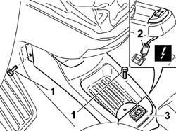

1058A20 cng/fuel switch - r r
- Path
- Procedures > 10 ENGINE > 1058 CNG FUEL SYSTEM > 1058A gas circuit multi point injection > 1058A20 cng/fuel switch - r r
- Kind
- repair procedure (removal / refitting; the operation number is the code)
- Applies to
- all engines; all production periods; only with equipment: BIPOWER
- Interactive page
- https://sloeber94.github.io/elrnDB-fDbl/en/#/2584547
Applies to: all engines; all production periods; only with equipment: Cargo trim level and BIPOWER
 Removing
Removing
 Refitting
RefittingDisconnect the negative battery terminal.
1. Undo the bolts securing the tunnel trim.
2. Lift the trim and disconnect the electrical connector of the operating mode selector.
 | Name | Connector |
|---|---|---|
2 | Petrol/methane switch | H95 |
3. Remove the operating mode selector complete with embellishment.

Applies to: all engines; all production periods; only with equipment: Cargo trim level and BIPOWER
Refitting
RemovingCheck the condition of the methane/petrol selector switch.
Fit the switch on the central tunnel trim.
Connect the electrical connection.
| Name | Connector |
|---|---|---|
- | Petrol/methane switch | H95 |
Refit the tunnel cover and secure it using the bolts.
Connect the terminal to the negative battery pole.